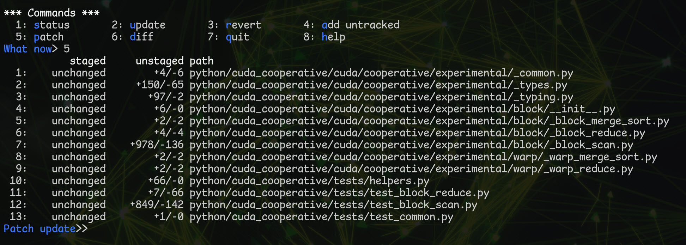

Git Carpentry
Crafting PRs Reviewers Will Love
Trent Nelson
2025-06-22
Introduction
Purpose Of This Deck
- Messy WIP-commit branches are great… for the developer.
- Horrendous for reviewers.
- Horrendousness scales proportionally to size of PR (lines/files changed).
- Thoughtfully-crafted topical commits are much friendlier to reviewers.
- This deck captures the (opinionated) techiques I use to go from messy WIP-commit branches to PRs geared toward making reviewers’ lives easier.
On Being Opinionated
- Almost everything presented is done a certain way because I’ve been bitten by doing it different ways.
- So this deck’s narrative is very prescriptive: “Do it like this.”
- Feel free to not do it like that if you prefer an alternate approach.
How Burdensome Is This Going To Be?
- If this was a pain to do, I wouldn’t do it.
- And my annoyance threshold is pretty low.
- The time it takes to craft a new topical PR is proportional to PR complexity.
- I’ve never had it take more than a single “sitting” (i.e. an uninterrupted morning/afternoon/evening hack session)…
- Biggest to date: huge feature branch hacked on by myself and four other developers over the course of ~3 weeks (~90 messy commits, about 20,000 lines changed): took about 3.5-4 hours and some banging electro to craft a new reviewer-friendly branch of about ~10 commits (including accurate developer attribution). Saved tens of hours of reviewers’ time.
Other Benefits?
- I always use this approach for non-trivial PRs:
- Half the battle of any PR is getting people to review it, so making it as easy as possible for reviewers yields responsive approvals.
- Additionally, I almost always catch small bugs or think of improvements whilst going through the rebasing process…
- The end result is always better quality code.
Tips For Interacting With This Deck
- Intent of this deck is to be useful as a reference you can come back to.
- https://trent.me/decks/git-carpentry
m: Side Menu with TOCo: Overview Mode- This deck uses vertical and horizontal orientation, so overview mode is helpful for quickly navigating to the area you’re interested in.
Pre-requisites
~/.gitconfig
# When rerere is enabled (rerere.enabled = true), Git records how you
# resolve merge conflicts and reuses those resolutions in future merges,
# automating the conflict resolution process for identical or similar
# conflicts. This feature is particularly useful in long-running branches
# to minimize manual conflict resolution effort.
[rerere]
enabled = true
# When rebase.autoStash is enabled (rebase.autoStash = true), Git
# automatically stashes any local changes before a rebase operation and
# reapplies them after the rebase completes, facilitating a smoother
# rebase process for working directories with uncommitted changes.
[rebase]
autoStash = true
# Other useful defaults:
[init]
defaultBranch = main
[push]
default = simple
[checkout]
defaultRemote = origin
# If you have Beyond Compare installed (https://www.scootersoftware.com/),
# use these settings to configure it as your default mergetool:
[merge]
tool = bc3
[mergetool "bc3"]
cmd = /usr/bin/bcompare $LOCAL $REMOTE $BASE $MERGED
# Some handy aliases.
[alias]
st = status
ci = commit
br = branch
co = checkout
df = diff
dc = diff --cached
lg = log -p
lol = log --graph --decorate --pretty=oneline --abbrev-commit
lola = log --graph --decorate --pretty=oneline --abbrev-commit --all
ls = ls-files
# Show files ignored by git:
ign = ls-files -o -i --exclude-standardShell Aliases
alias gb='git branch'
alias gba='gb -a'
alias gbc='gb --show-current'
alias gss='git status --untracked-files=no'
alias gs='git status'
alias gd='git diff'
alias gdc='git diff --cached'
alias gg='git grep -n'
alias ggi='git grep -ni'
alias gds='git diff --staged'
alias gc='git commit'
alias gpr="git pull --rebase" # <-- important!
alias gprom="git pull --rebase origin main" # <-- important!
alias gls='git ls-files'
alias gmb='git merge-base HEAD origin main' # <-- important!
alias gll='git log --graph --decorate --pretty=oneline --abbrev-commit'
alias gllmb='gll $(gmb)..HEAD'
alias grib='git rebase -i $(gmb)' # <-- important!GitHub SSH Config Aliases
- Add the following to your
~/.ssh/configfile:
Repo Clone & Fork Remote Setup
- Clone the upstream repo, not your fork, e.g.
git clone gh:NVIDIA/cccl. - Add your fork as a remote (
tpn= my fork/GH username)
- This ensures your
mainis always trackingNVIDIA/cccl. - Avoids accidentally creating a branch from
tpn/mainthat hasn’t been updated in 8 months.
Getting Started
Following Along At Home… [1]
- This is a bit quirky because you have to simulate a messy WIP-commit branch that someone else authored, then rebase it into a more reviewable state.
- In reality, you’ll be rebasing a messy WIP-commit branch you’ve already got, so you won’t need to do these initial branch setup steps.
Following Along At Home… [2]
- Options for getting set up:
- Checkout the original “messy” v1 branch I used during development.
- Create a new branch, then abuse interactive rebase to make it look like the v1 branch.
- Both options start the same way:
Side-bar: git merge-base
- When you create a branch off
main, themainrevision upon which your branch will be based is known as themerge-base. alias gmb='git merge-base HEAD origin main'- This is the single most useful revision in rebase-oriented branch development.
Side-bar: git merge-base (cont.)
- From aliases earlier:
- Git log of all changes in the branch since creation from
main:
% gllmb
* afb1290cc (HEAD -> 4310-add-scan_op-support-to-cudacoop-block_scan-routines, tpn/4310-add-scan_op-support-to-cudacoop-block_scan-routines) Improve invariants.
* 356514111 Tweak docstrings a bit more.
* 49132575a Export `block_scan` symbol; do not use `ScanOp('+')` as default arg.
* 481375f94 Remove redundant/obsolete code.
* cd1467134 Vastly improve docstrings for all block_scan routines.
* 8aace835d Minor cosmetic tweaks of ScanOp-related functionality.
* 841fab0c8 Tweak module docstring.
* 1292c4c39 Fix 2D sizes; add float64 test.
* 4d7502566 Working checkpoint commit; all test_block_scan.py tests now pass!
* 6adf8f575 Checkpoint commit of block scan scan op process.
* 712d9e3b6 Rename DependentOperator to DependentPythonOperator.
* 6900f83df Checkpoint commit of test_block_scan.py prior to o1-pro revamp.
* 441f57fb0 Checkpoint commit of test_block_scan.py prior to ChatGPT o1-pro.
* 0360c5167 Checkpoint commit of local _block_scan.py changes prior to test refactoring.
* 0df7d0de5 Initial implementation of new tests for block_scan routines.
* ddb3da6ec Relocate Complex type scaffolding to helpers.py.
* da6c9a2e8 Implement exclusive_scan and inclusive_scan in block_scan module.
* 155a7712f Implement ScanOp class and supporting helpers.
%Demo Branch Setup: Option 1
- Checkout my
tpnremote’s4310-add-scan_op-support-to-cudacoop-block_scan-routinesbranch directly:
Demo Branch Setup: Option 2 [1]
- Pro-tip: using interactive rebase, you can make any branch look exactly like any other branch by:
- Rebasing onto the
merge-baserevision of the original branch. - Manually replaying (or picking) the revisions from that branch via interactive rebase.
- Rebasing onto the
Demo Branch Setup: Option 2 [2]
- This brings up the interactive git command editor.
- Delete all lines.
- Paste the
gllmboutput from earlier. - Delete the trailing
%and leading% gmbll. - Replace the
^*withpick. - Reverse the order via
:%!tac(tac= reverse cat) - Save and… voila!
The Interactive Rebase Workflow
Overview
- Stage 0: Backup
- Stage 1: Git Reset Back to Merge Base
- Stage 2: Git Add Interactive Loop
- Stage 3: Fixing Stage 2 Mistakes With Interactive Rebase
Stage 0: Backup
- You’ll eventually screw something up with interactive rebasing and will want all your original work preserved somewhere safe.
- Thus: always make sure you have a backup of your messy WIP-commit branch pushed somewhere a) remote, and b) unrelated to your clean PR branch.
- For me this usually entails:
- Do my initial dev in
4310-scan_op. Push to Github frequently. - When ready to clean everything up, create a new
-v2branch from the initial dev branch (4310-scan_opin our case).
- Do my initial dev in
Stage 0: Backup (cont.)
- We’ve already created the
4310-scan_opbranch, and it’s the active branch in our repo. - So from there, create a new
-v2branch where we’ll do all our new work. - This is the branch from which you’ll eventually create the PR.
Stage 1: Git Reset Back to Merge Base
- We want to erase all of the commits in our v2 branch, but keep all the changes we made since we branched from
main:git reset $(gmb)
- This resets the index back to the merge base, but keeps all the changes you made locally.
Stage 2: Git Add Interactive Loop
- When you’re at this point of development, you generally have a reasonable idea of the changes you’ve made, and how you’d like to organize them in a cleaned-up PR.
- I usually have a mental list of categories that typically looks something like this:
- Cosmetic changes.
- Minor/unrelated/housekeeping changes.
- The main change, potentially broken up into multiple pieces.
- If I’m breaking an API, a commit that contains all the API updates.
- Any new or updated tests.
- I don’t write down this list; too burdensome. Prefer to keep it loosey-goosey.
On Crafting Topical Commits
- I don’t ever focus on ensuring that each individual commit is well-formed (i.e. can be cleanly built/tested).
- When it can be done, the effort it takes will often dwarf the value provided.
- Sometimes it just can’t be done (i.e. if you want to refactor an API in one commit, and keep all the updates to existing code to a separate commit).
- Primary goal is always to make the reviewer’s life easier.
- Remember, Github PR review UI allows a reviewer to advance commit-by-commit when reviewing your PR.
- So I prefer to use descriptive commit messages in order to tell a cumulative story.
Cheating For The Sake Of The Demo…
- In this next section we’ll look at some real-life
git add -iusage that simulates the workflow I’m proselytizing in this deck. - The demo is based off a real-life example, where the v2 branch’s PR was merged into CCCL here: https://github.com/NVIDIA/cccl/pull/4628
- Next slide will depict a screen capture of using the
git add -iUI to replicate the first commit in that v2 branch.- Left terminal: git log of final v2 commits.
- Right terminal: where I’ll do the
git add -iwork.
Side-bar: Delta Pager
- Forgot that I had this in my
~/.gitconfigonnv1:
# sudo apt install -y git-delta
# https://dandavison.github.io/delta/side-by-side-view.html
[core]
# Comment out this next line to disable delta for e.g. `git show ...`
pager = delta
[interactive]
# Comment-out this next line to disable delta and go back to unified diffs.
diffFilter = delta --color-only --features=interactive
[delta]
features = decorations
side-by-side = true
line-numbers-left-format = ""
line-numbers-right-format = "│ "
[delta "interactive"]
keep-plus-minus-markers = false
[delta "decorations"]
commit-decoration-style = blue ol
commit-style = raw
file-style = omit
hunk-header-decoration-style = blue box
hunk-header-file-style = red
hunk-header-line-number-style = "#067a00"
hunk-header-style = file line-number syntaxgit add -i; 5: patch>

- Prompt is very flexible, accepts input similar to “Print Pages”-type UIs.
*→ Selects everything1 5 10→ Selects 1, 5, and 101-5 7-8 10 12-13→ Selects 1-5 (e.g. 1,2,3,4,5), 7-8, 10, 12-13-5→ Unselects 5 (i.e. if added by mistake)-*→ Unselects everything
- Press Enter (with no selection input) to enter interactive hunk selection mode.
Interactive Hunk Selection
(1/1) Stage this hunk [y,n,q,a,d,s,e,?]? ?
y - stage this hunk
n - do not stage this hunk
q - quit; do not stage this hunk or any of the remaining ones
a - stage this hunk and all later hunks in the file
d - do not stage this hunk or any of the later hunks in the file
s - split the current hunk into smaller hunks
e - manually edit the current hunk
? - print help- I use
y,n, andqfrequently. - Infrequently:
a,d,s - Once in a blue moon:
e
Interactive Hunk Selection: Latest Git Version
(1/6) Stage this hunk [y,n,q,a,d,j,J,g,/,s,e,?]? ?
y - stage this hunk
n - do not stage this hunk
q - quit; do not stage this hunk or any of the remaining ones
a - stage this hunk and all later hunks in the file
d - do not stage this hunk or any of the later hunks in the file
j - leave this hunk undecided, see next undecided hunk ***
J - leave this hunk undecided, see next hunk ***
g - select a hunk to go to ***
/ - search for a hunk matching the given regex ***
s - split the current hunk into smaller hunks
e - manually edit the current hunk
? - print help- New options annotated with
*** - Haven’t personally used them.
- (Literally only just noticed them by accident.)
Interactive Hunk Selection: Splitting
- Use case: you’re presented with a hunk.
- But you only want to include some of the lines presented.
s→ split the current hunk into smaller hunks
Interactive Hunk Selection: Manually Edit
- Sometimes a hunk can’t be split into smaller hunks (e.g. if all lines in the hunk are contiguous).
- But you can hack it manually via manual hunk editing.
e→ manually edit the current hunk- To remove
'-'lines, make them' 'lines. - To remove
'+'lines, delete them.
- To remove
On Manually Editing Hunks
- If the hunk doesn’t apply cleanly, the editor will open back up.
- I’ve had this when trying to do convoluted additions/removals plus also editing existing code.
- If I can’t get it working by hacking the hunk/patch… I’ll just go back to the source and make it reflect the exact change I want.
- As everything is backed up (either via
git reflogor the Stage 0 push to somewhere remote), there’s no risk of completely losing code.
- As everything is backed up (either via
Continuing The Git Add Interactive Loop
- I keep repeating the
git add -i,5> patch,git commitloop until finished. - In a perfect world, I make no mistakes, and all my interactive adds are flawless.
- Reality: that’s never the case. I’ll always miss something, or want to include something in a prior commit, or need to rework something a bit more, or improve a comment, etc.
Stage 3: Fixing Inevitable Mistakes
- Having used SCCS, RCS, CVS, ClearCase, Subversion, then git, I can’t remember life before
git rebase -i $(gmb).git rebase --interactive $(git merge-base HEAD origin main)git rebase -i $(gmb)alias grib='git rebase -i $(gmb)’
- I’ll use
gribto craft a git history that I can then use to demonstrategrib.
The Fixup Commit
- Scenario: you forgot to include something in a prior commit.
- If it was the last commit, you can fix easily enough with
git commit --amend. - If you’re like me, you only notice the issue after N+1 subsequent commits.
- Thus: we need to make a fixup commit!
- Literally: I make the fix, then
gc -m fixup. - Maybe
gc -m "fixup remove depfunc"so I remember where to inject the fixup during rebase. - Concrete example: I forgot the
N.B. Uncomment this to print ...lines in the very firstgit add -iexample.
Git Rebase Interactive Commands
# Commands:
# p, pick <commit> = use commit
# r, reword <commit> = use commit, but edit the commit message
# e, edit <commit> = use commit, but stop for amending
# s, squash <commit> = use commit, but meld into previous commit
# f, fixup [-C | -c] <commit> = like "squash" but keep only the previous
# commit's log message, unless -C is used, in which case
# keep only this commit's message; -c is same as -C but
# opens the editor
# x, exec <command> = run command (the rest of the line) using shell
# b, break = stop here (continue rebase later with 'git rebase --continue')
# d, drop <commit> = remove commit
# l, label <label> = label current HEAD with a name
# t, reset <label> = reset HEAD to a label
# m, merge [-C <commit> | -c <commit>] <label> [# <oneline>]
# create a merge commit using the original merge commit's
# message (or the oneline, if no original merge commit was
# specified); use -c <commit> to reword the commit message
# u, update-ref <ref> = track a placeholder for the <ref> to be updated
# to this position in the new commits. The <ref> is
# updated at the end of the rebase
#Git Rebase Interactive Commands (cont.) [1]
In order of how frequently I use them for every given PR…
- Fixup
- I frequently use this for every PR.
- Melds the commit into the prior one; discards the commit message.
- Easy to cut-and-paste the
fixupcommit from the last command to wherever you want it injected.- There are fancier auto-squash options, I’ve tried them, but I always end up just manually placing the
fixupcommit where I want it.
- There are fancier auto-squash options, I’ve tried them, but I always end up just manually placing the
Git Rebase Interactive Commands (cont.) [2]
- Reword
- I’ll maybe use this a few times per PR.
- Allows you to reword the commit message.
- Will drop you into your editor with the existing commit message, ready for you to edit.
- Make your changes, save and exit, and voila, new commit message, rebase continues.
Git Rebase Interactive Commands (cont.) [2]
- Edit
- I’ll maybe use this once or twice per complex PR.
- Drops you into a prompt after applying the commit and allows you to do anything you want.
- Handy for removing code you accidentally added.
- But you can literally do anything; git add, rm etc.
- Once you’ve finished your changes, you need to commit. Two options:
git commit: inject a new commit.git commit --amend: meld your changes into the prior commit.
- After committing, you need to
git rebase --continue.
Edit Example
- That first commit was a bit hacky, we combined two completely unrelated things into a single commit.
- Let’s break it back out into two separate commits via
edit.
Advanced-Fu with Exec
- Bulk commit message changes.
2,$ s/^pick/exec git commit --amend --no-edit -m "$(git show -s --format=%B | sed 's\/^MINOR: \/\/')"\rpick/
- Changing authors.
exec git commit --amend --no-edit --author="Dave Cutler <davec@microsoft.com>"
- Adding co-authors.
exec git commit --amend --no-edit -m "$(git show -s --format=%B)$(echo; echo 'Co-authored-by: Linus Torvalds [linus@linuxfoundation.org](mailto:linus@linuxfoundation.org)')"
Conclusion
Other Recommendations
- Never merge! Always
git pull --rebase. Orgpralias. - Want to “sync” with
main?git pull --rebase origin main(orgprom). - After rebasing you’ll need to
git push --force-with-lease(orgpfwl). - Once you’ve created the PR… do you address feedback via explicit commits, or fixups against original commits?
- I use both depending on… no concrete set of rules.
- And remember: there’s always
git reflogif you really eff things up.